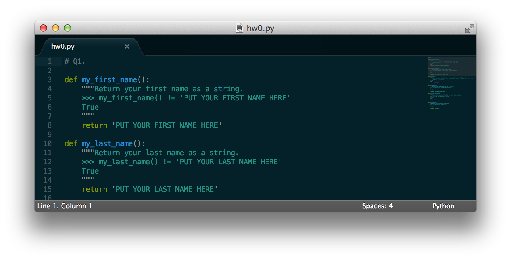
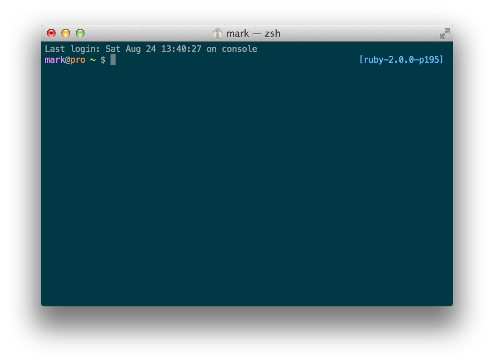
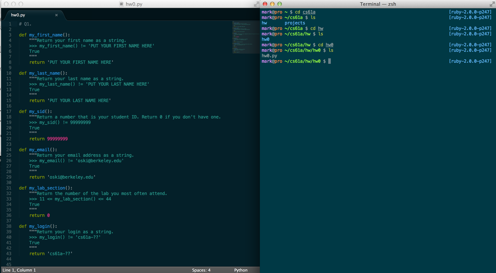
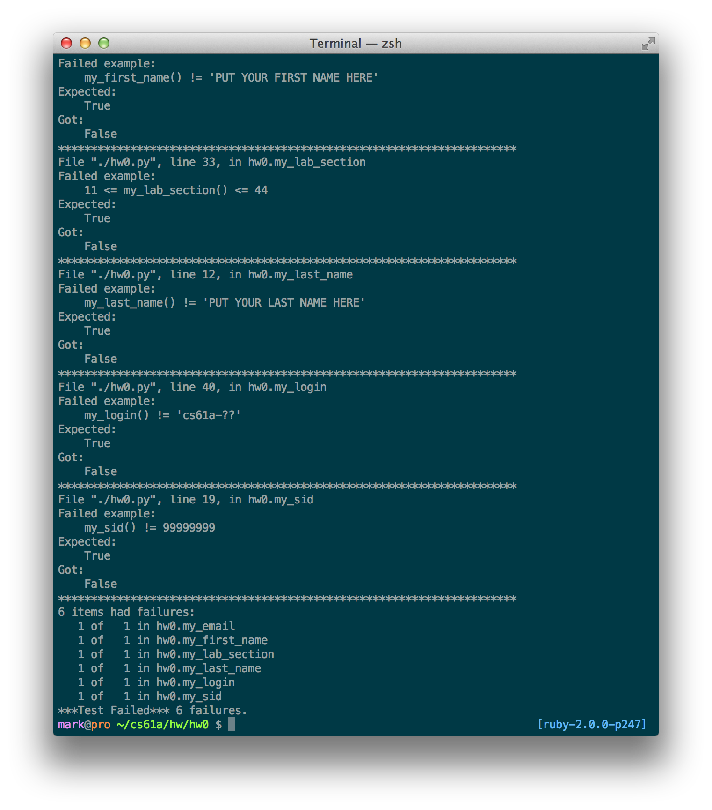
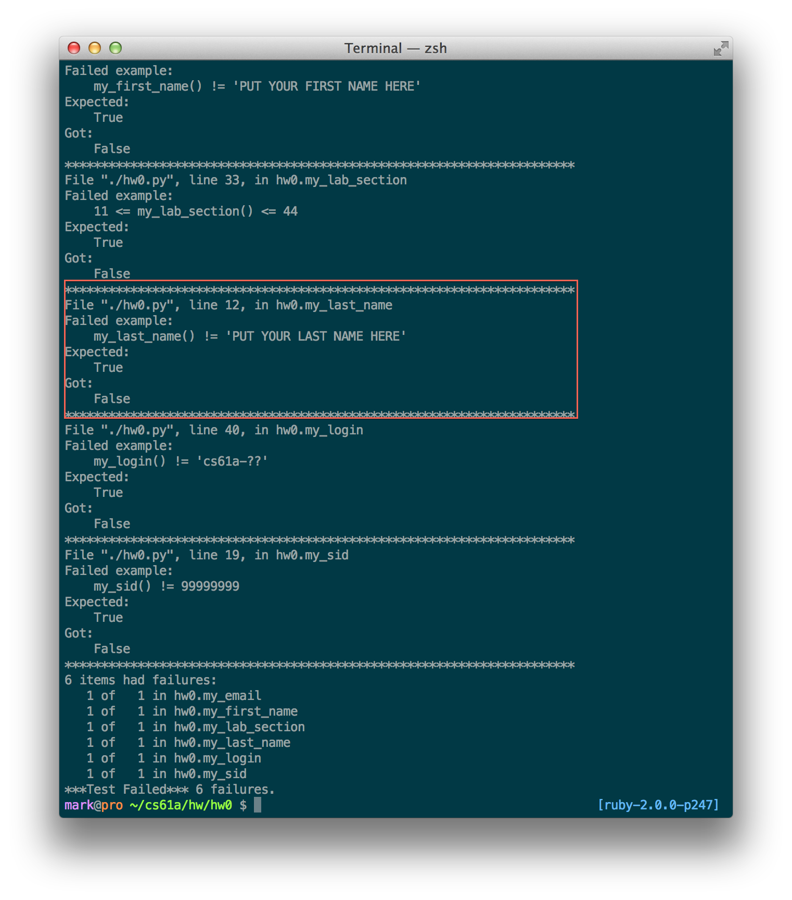
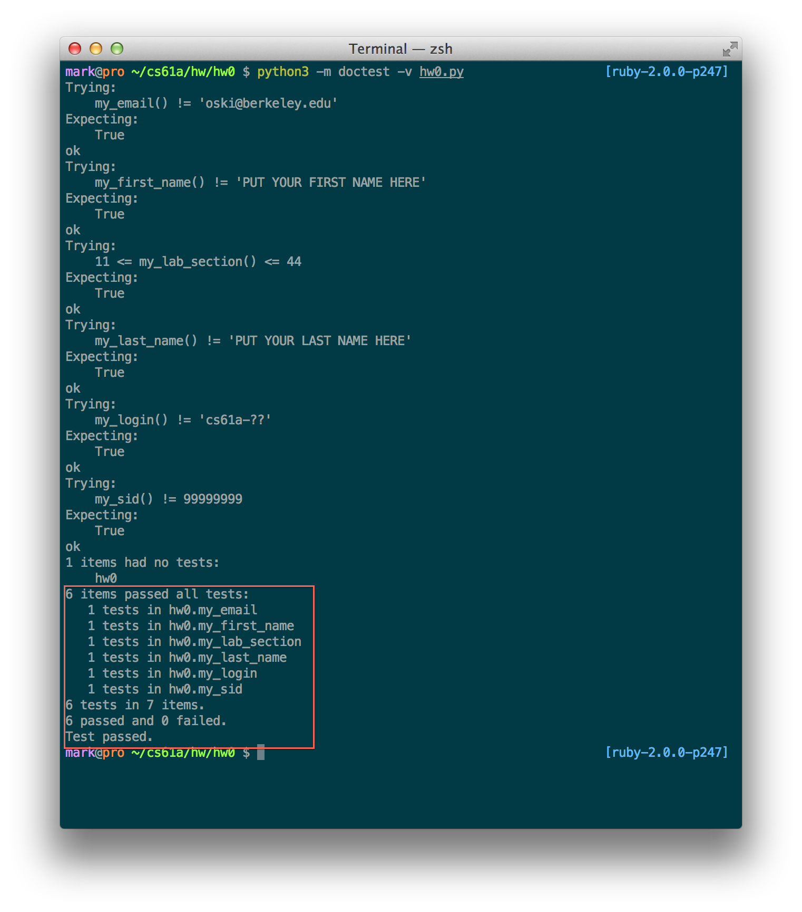
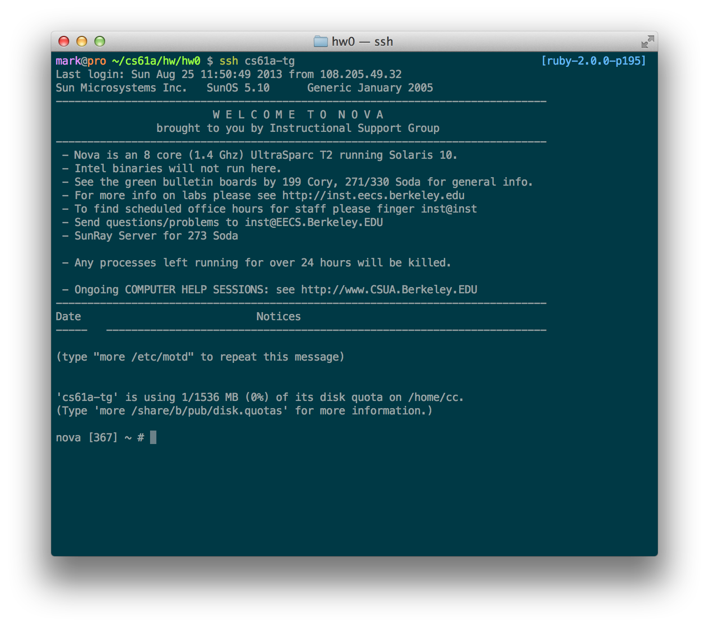
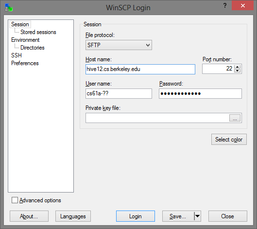

By the end of this lab, you should have submitted the lab00
assignment using the command submit lab00.
This lab is due by 11:59pm on 06/25/2014.
Here is a lab00.py starter file for this lab.
Hello and welcome to 61A! Before class gets started, we are going to have you do a preliminary lab to set up your computer. In this lab, we'll show you how to download Python, write code in a text editor, and run it on your interpreter so you can complete and submit labs, homeworks, and projects. In the process, we will walk you through how to submit your first assignment.
The first step is to download Python. If you have a Mac, Python 2 comes pre-installed, but for 61A you'll need Python 3 (either 3.3 or 3.4). You can download here. Make sure to choose the correct operating system (most likely Mac OSX, Windows, or Linux).
You'll need a text editor to edit code. We've provided some options below, but if you've gotten comfortable editing code (not regular text) on some other text editor, feel free to continue using that. Note that Microsoft Word, Notepad, and related products are not good text editors.
| Windows | Mac | Linux |
|---|---|---|
| Sublime Text 2 | Sublime Text 2 | Sublime Text 2 |
| Notepad++ | TextMate 2 | Vim1 |
| TextWrangler | Emacs | |
| Vim2 or MacVim | Gedit | |
| AquaMacs | ||
| Gedit |
Note: Even though a standard download of Python will come with a text editor called Idle, we do not recommend it at all. The reason is that you won't gain as much experience using the command line to run your Python programs. This will hurt you a lot once you start working on the projects for this class so we highly recommend that you use the command line to run your files from day 1!
Most people who are new to programming find Sublime Text to be the most comfortable first text editor, but you should definitely explore all the options above to find the one that works for you.
Now that we have a text editor, let's start editing some files! Every homework assignment, we will provide you with a template with a lot of starter code already filled in for you. Remember, that assignment we mentioned at the beginning? You can get the template we just mentioned for it here!
You should now have a file called lab00.py somewhere on your
computer. Go ahead and open up that file in your text editor of
choice.
For the screenshots that you'll see below, we're using Sublime Text 2 on Mac OS X with the Solarized color scheme. Sublime Text 2 runs the same on any computer so don't worry if yours looks a little different, the functionality is identical.
Now before we edit our file, the first thing that you should notice is
the text wrapped in three quotation marks """ at the beginning of
each function definition. That text is called a docstring, which is
a description of what the function is intended to do. Docstrings are
extremely useful because other programmers can read them to get a nice
description of what the function is supposed to do, without having to
read your code.
Within the docstring, there are lines which begin with>>>. That's
the start of a doctest. The first line of a doctest shows the
function being called on a particular input (if the function takes
inputs). The line immediately underneath shows the expected output of
that call. Doctests are a great way both to describe the function in
terms of what it's supposed to do and check that you've written it
correctly. Let's try an example, the my_last_name() function.

The two tests in our docstring check two things:
'PUT YOUR LAST
NAME HERE'In order to use these tests to check that we've written our function correctly, we will have to open the Python interpreter on a terminal window. If you are using Mac OSX or Linux, you should have a program called Terminal already installed, and can simply open it up. If you're on Windows, you have a few options:
| Mac or Unix | Windows |
|---|---|
| Terminal | GitBash (Runs a Unix like terminal) |
| Cygwin (More advanced version of GitBash) |
Once you have your terminal window set up, we're going to learn some Unix commands - Unix commands are a way to navigate files and folders, open applications, and much more, all from the Terminal (and without having to use a mouse).

Right now, you should be in your home directory (a directory is simply
a folder on your computer). Don't worry if your terminal doesn't look
exactly the same. The important part is that the text on the left hand
side is relatively similar (with a different name) and there should
definitely be a ~. (The ~ is a shortcut for the home directory).
Now for our commands. The first three commands that we will be
learning are ls, cd, and mkdir.
ls lists all the sub-directories or files in your current directorycd lets you switch directories (it stands for "change directory")cd destination_directory_name changes you into a sub-directory named
destination_directory_name (it will fail if destination_directory_name is not immediately inside the current directory)cd .. switches you into the parent directory of your current directorycd jumps you back to the home directorycd into any directory in your computer (not necessarily a
sub-directory of the current directory), you need to know its entire
file-path, or all the directories from the home directory to the
one you want. If I want to find lab00 inside labs inside cs61a
inside home, for example, I would type cd ~/labs/lab00mkdir creates a new sub-directory in your current directory like
so: mkdir new_directory_nameSince it's a good idea to have a folder dedicated to containing all
your materials for this course, let's make a directory called
cs61a. To do this, just type mkdir cs61a and magically, a new
folder called cs61a will be created! We can now cd into this new
folder and add some more folders for organization. Let's add a hw
and a lab folder inside our cs61a directory and then, another
lab00 folder inside of the lab folder like so:
stuff ~ $ cd cs61a
stuff cs61a $ mkdir hw
stuff cs61a $ mkdir labs
stuff cs61a $ mkdir labs/lab00Now if we list the contents of the directory with ls, we can see
that we have the two folders hw and labs.
The next thing we have to do is find our downloaded file. By default,
it's probably in ~/Downloads if you're using Mac OS/Linux/Windows
(GitBash or Cygwin) or C:/Users/NAMEOFUSER/Downloadsif you're using
the Windows Command Line (cmd.exe). Let's cd into that directory.
Next, we'll use the mv command to move our file into our homework
directory like so:
stuff Downloads $ mv lab00.py ~/cs61a/labs/lab00This command tells the terminal that we want to move the file located
at ~/Downloads/lab00.py to the directory ~/cs61a/labs/lab00.
We should change back to our lab00 folder now that our file has been
moved there. We're just about ready to start editing!
stuff Downloads $ cd ~/cs61a/labs/lab00Don't worry if this seems like a lot to take in at the moment, it will get way easier over time. Just keep practicing!
Open up your file which is now located in ~/cs61a/labs/lab00 in your text
editor of choice and let's begin editing!
We suggest having these two windows open and simultaneously visible at all times:
Here's a screenshot of a typical workspace. We've got our text editor on the left, and our terminal on the right!

Let's get back to doctests. Again, doctests are a way for us to write simple tests for our code. We're basically asking ourselves, "What is the expected output of this function if I put in this specific input?"
To run our doctests, we type this command in our terminal:
python3 -m doctest lab00.pyThis will give us a lot of output that shows which tests we are currently failing. Try running it on the file you just downloaded. You should see something like this:

Since we haven't edited the template at all yet, we're not too surprised that the doctests failed. But let's take this opportunity to analyze the failure messages. Take a look at the my_last_name test, highlighted here:

This output gives us some pretty good debugging info. For
this particular test, it's saying we have an error in our lab00.py
file on line 12 in the function my_last_name. Now we know where to
look to fix the error (now is a good time to make sure your text
editor displays line numbers). After we find the line, let's
understand why we failed this test. The test expected that when the
my_last_name function is called with no inputs, it should not
return the string 'PUT YOUR LAST NAME HERE'. Change that line to
return your actual last name. Make sure you enter this information
carefully because this is how we will associate all homework,
projects, and exams with you and your account.
Once you have changed the return value of the function my_last_name
(make sure that you are returning a string, which has quotes around
it), you should be able to run the doctests again and your test for
my_last_name should pass, leaving only five failures to fix.
Other notes about doctests: You might run your doctests and see
that there is no output. This is good! Doctests will only print
output when you have failures in your tests. However, if you want to
be super sure that you're passing all of the tests, you can add a
command flag -v to the command to see the verbose output:
python3 -m doctest -v lab00.pyFor the section number, you can find a complete list of all the sections on the class calendar which is located here.
Once you have successfully completed the homework and have 0 tests failing, the verbose output of the doctests should look something like this:

Before you can submit, you'll want to log in to the instructional server using the login and default password provided on the sheet which should have been passed out in the beginning of lab.
For Windows, you'll be using a program called
PuTTY. See
this
guide on how to set it up. Note that instead of
h50.cs.berkeley.edu, you should use cory.eecs.berkeley.edu.
You'll be using a command on your terminal called ssh to log in to
the instructional accounts.ssh stands for "secure shell" - a shell
is a way to access an operating system (your terminal is a type of
shell), so ssh allows you to securely access a remote operating
system. The format is as follows:
ssh cs61a-??@cory.eecs.berkeley.eduWhen you type it in, replace ?? with your CS 61A login (found on the
login sheet passed out at the beginning of lab). You'll be prompted
for your password (the one given on the login sheet). Once you enter
it, you're logged in as your username on the cory server at
eecs.berkeley.edu.
Once logged in, you'll see something like this:

The first thing you want to do is register. To get started, simply
enter the command register and you'll be prompted for information
such as your name, email, SID, etc. Please answer all of those
questions accurately - it is how we determine your identity for the
purposes of grading. Once you're done, use the command
check-register to make sure all your information is correct.
The next thing you'll want to do is replace the annoying default
password we provided you with something more memorable. For that, type
in the command ssh update. You should be taken to a menu bar which
is currently set on "Change Password". Hit enter and change your
password settings, then exit.
Now that you have finished the lab and your registration, it's time to copy the lab file to the instructional server.
For Windows, you'll need to download a program called WinSCP in order to copy files. After you've installed WinSCP, you'll have to configure it so that you can log in to the server. Here's a screenshot of a typical log in:

Once you're logged in, all you have to do is navigate to your
~/cs61a/labs/lab00 folder on the left and drag your file over to the server
on the right.
Mac and Linux users can use the built-in terminal you've used to log in to the server.
First, open a new terminal window (without closing the terminal window you used to log in). Navigate to the directory which contains your lab00 file. Then type in the following command:
stuff lab00 $ scp lab00.py cs61a-??@cory.eecs.berkeley.edu:~/Again, replace ?? with your login. Here scp stands for "secure
copy" - you are telling the computer to securely copy the file
lab00.py from the lab00 directory on your home computer to your
account on the instructional server.
The text that comes after the colon is important. We're specifying
where on the server we want the file to go. In this case, we're
placing it in the server's home directory, again represented by the
~ symbol. If you later add folders on the server, you could specify
a destination like cs61a-??@cory.eecs.berkeley.edu:~/labs/lab00.
After typing this command, you'll be asked for your password and the the file will transfer over - now we can go on to submitting.
Now that you have all of your files for your assignment on the instructional servers, we can submit the assignment.
Switch back into the window where you are logged in to the instructional server. You should be able to use ls to see the file you just copied over.
We're going to first create a folder for our lab00.py file. In the
future, you'll be submitting projects with multiple files so it's good
to get in the habit of creating a new folder for each
assignment. Let's make the new lab00 directory, move our lab00.py into
it, and then change into our lab00 folder:
stuff ~ # mkdir lab00
stuff ~ # mv lab00.py lab00
stuff ~ # cd lab00
stuff ~/lab00 #To submit the lab, use the command
stuff ~/lab00 # submit lab00Answer the questions that come up by typing yes or no. Once that's
done, you can check that you sucessfully submitted with:
stuff ~/lab00 # glookup -tglookup is the name of the command that you will use this semester
to check your grades. At any time, you can simply enter glookup to
check for the grades of your submitted assignments (the ones that have
been graded so far). Adding a -t to the glookup command allows you
to see all the times that you have successfully submitted a homework
or project. You should see a successful submission of about 1 minute
ago.
Congratulations! You've just submitted your first assignment!
To install vim on Ubuntu, you can type sudo apt-get install vim. An alternative that has a graphical interface, vim-gnome, can be installed with sudo apt-get install vim-gnome
Preinstalled on Mac OS X